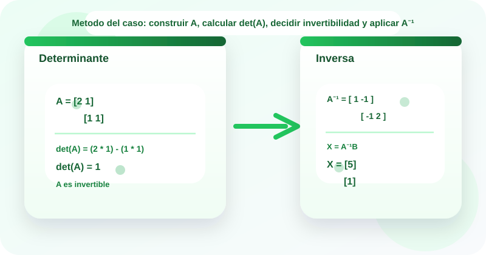

Casos guiados
Estudio de casos
Matrices inversas y determinantes
🧠 Los determinantes permiten decidir si una matriz es invertible, mientras que la matriz inversa ofrece una ruta compacta para resolver sistemas lineales y analizar relaciones entre variables de un modelo.
En algebra aplicada y tecnologia se usan para estudiar unicidad de soluciones, transformaciones lineales, recuperacion de variables y deteccion de matrices singulares. Este OVA se enfoca en calcular determinantes de matrices 2 x 2 y 3 x 3, verificar invertibilidad y hallar la inversa de matrices 2 x 2.
El recurso usa la metodologia de estudio de casos para traducir situaciones del contexto a matrices, analizar su determinante y justificar si la inversa existe y que significa en el problema.

Objetivos de aprendizaje
- 🧠 Reconocer el papel del determinante para decidir si una matriz es invertible.
- 📐 Calcular determinantes de matrices 2 x 2 y 3 x 3 a partir de sus entradas.
- 🔁 Hallar la inversa de matrices 2 x 2 usando la formula basada en el determinante.
- 🧩 Relacionar la ecuacion matricial AX = B con la expresion X = A⁻¹B cuando la inversa existe.
- ✅ Interpretar matrices singulares, soluciones unicas y restricciones dependientes dentro de un caso.
Contenido tematico
Del determinante a la inversa y la interpretacion del sistema
El eje del recurso es calcular el determinante, decidir la invertibilidad y usar la matriz inversa como herramienta de analisis.
Determinante
Resume una propiedad clave de la matriz y ayuda a decidir si es invertible.
det(A)
Si det(A) = 0, la matriz es singular.
Inversa 2 x 2
La inversa existe solo cuando el determinante es distinto de cero.
A^-1
Permite resolver X en la ecuacion matricial AX = B.
Matriz singular
No posee inversa y suele indicar dependencia o perdida de unicidad.
det(A) = 0
Impide aplicar el metodo de la inversa.
Matriz invertible
Tiene inversa y suele corresponder a una solucion unica en sistemas asociados.
det(A) ≠ 0
Garantiza que A⁻¹ existe.
Ecuacion matricial
Relaciona una matriz de coeficientes con un vector de variables y un vector de resultados.
AX = B
Si A es invertible, entonces X = A⁻¹B.
Actividades de practica
Refuerza el calculo de determinantes, la interpretacion de matrices singulares y el uso de la inversa mediante actividades interactivas y laboratorios guiados.
Actividad 1. Clasifica cada tarjeta
Arrastra cada elemento hacia la categoria correcta.
Si estas en celular, toca una tarjeta y luego la categoria correspondiente.
det(A) = ad - bc
Expansion por cofactores
A^-1 = (1 / det(A)) [d -b; -c a]
X = A^-1B
Matriz singular
det(A) = 0
AA^-1 = I
No existe la inversa
Determinante
Inversa
Diagnostico
Actividad 2. Relaciona cada situacion con la idea adecuada
Arrastra cada situacion hacia la categoria que mejor la representa.
Piensa si el caso pide calcular un determinante, hallar una inversa, detectar singularidad o recuperar variables.
Se necesita verificar si una matriz 3 x 3 es invertible antes de seguir.
Se conoce una matriz 2 x 2 con det(A) ≠ 0 y se desea hallar A^-1.
La matriz tiene det(A) = 0 y no puede invertirse.
Se quiere resolver AX = B usando la matriz inversa.
Hay que aplicar el producto cruzado principal menos el secundario.
Se intercambian la diagonal principal y cambian los signos de la secundaria.
Las restricciones del sistema son dependientes y no hay inversa unica.
El vector de variables se recupera multiplicando por A^-1.
Determinante
Inversa
Singularidad
Aplicacion
Actividad 3. Ordena la metodologia del caso
Asigna del 1 al 5 el orden correcto para analizar una matriz y decidir si su inversa sirve en el problema.
Actividad 4. Completa los resultados
Selecciona la respuesta correcta en cada ejercicio.
| Ejercicio | Respuesta |
|---|---|
| Si A = [2 1; 1 1], entonces det(A) = | |
| Si det(A) = 0, entonces A es | |
| Si A^-1 = [1 -1; -1 2] y B = [11; 6], entonces X = | |
| Si det(A) ≠ 0, entonces la matriz |
Actividad 5. Laboratorio de determinantes e inversas
Experimenta con matrices 2 x 2 para observar cuando existe la inversa y como se interpreta el resultado.
Laboratorio 1. Analizador de determinante 2 x 2
El laboratorio analiza la matriz A = [a b; c d] para calcular det(A) y decidir si es invertible.
Listo para analizar
Laboratorio 2. Explorador de matrices inversas
Listo para analizar
Evaluacion de comprension
Responde el cuestionario para verificar tu dominio sobre determinantes e inversas.
Recursos de apoyo
Antes de calcular
Verifica si la matriz es cuadrada y si sus entradas estan bien organizadas.
Durante el analisis
Usa primero el determinante para decidir si realmente conviene buscar la inversa.
Al finalizar
Interpreta si el resultado significa unicidad, dependencia o imposibilidad del modelo.
Hoja rapida de estudio
- El determinante decide si una matriz cuadrada es invertible.
- Si det(A) = 0, entonces A es singular y no tiene inversa.
- La formula de la inversa 2 x 2 solo se usa cuando el determinante es distinto de cero.
- La ecuacion AX = B puede resolverse como X = A⁻¹B si A es invertible.
- Un determinante no nulo suele asociarse con solucion unica en sistemas lineales.
Bibliografia
Anton, H., y Rorres, C. Elementary Linear Algebra. Wiley.
Lay, D. C., Lay, S. R., y McDonald, J. J. Linear Algebra and Its Applications. Pearson.
Poole, D. Linear Algebra: A Modern Introduction. Cengage Learning.
Grossman, S. I. Algebra Lineal. McGraw-Hill.